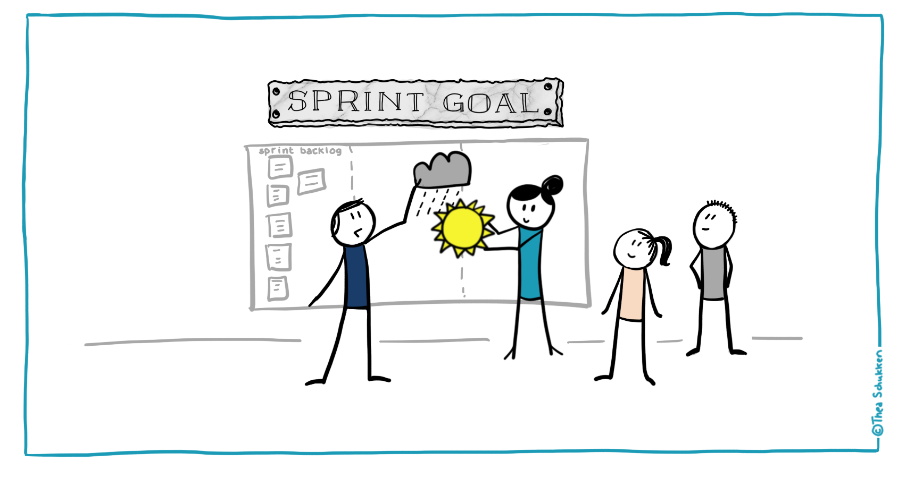

Agenda
- Scrum overview
- Kanban overview
- Scrum vs Kanban
Scrum sprint
A time-box that usually lasts 2 weeks during which a useable and potentially releasable product increment is created.
Sprint goal
The desired outcome of an iteration
Product and Sprint Backlog
Product Backlog is an ordered list of the new features, changes to existing features, bug fixes, infrastructure changes or other activities
Sprint Backlog is the set of Product Backlog items selected for the Sprint
Scrum board
Scrum Board is a tool that helps Teams visualize Sprint Backlog. The board can take many physical and virtual forms but it performs the same function regardless of how it looks.


Burndown chart
Burndown Chart shows the actual and estimated amount of work to be done in a sprint.
Sprint Planning
The team chooses which work they can complete during the sprint and moves the work from the product backlog to the sprint backlog.
Daily Scrum meeting
A 15-minute stand-up meeting where each team member talks about their goals and any issues that have come up.
Sprint review meeting
At the end of each sprint, the team presents the work they have completed at a sprint review meeting.
Sprint retrospective meeting
The team reflects on how well Scrum is working for them and talks about any changes that need to be made in the next sprint.
Kanban events and roles
Scrum or Kanban?
Similarities
- Focus on delivering the releasable software often and early
- Need breaking the work into pieces
- Based on self-organizing teams
- Release plan is continuously optimized and based on the empirical data (lead time/velocity)
Differences
- Scrum requires specific roles whereas Kanban has no required roles
- Scrum is based on timeboxed iterations, combining planning, process improvement, and release. In Kanban, you can choose to do these activities on a regular cadence or whenever you need
- Scrum board is reset after each sprint. Kanban board is continuously used
- Scrum teams require estimation, whereas Kanban doesn’t